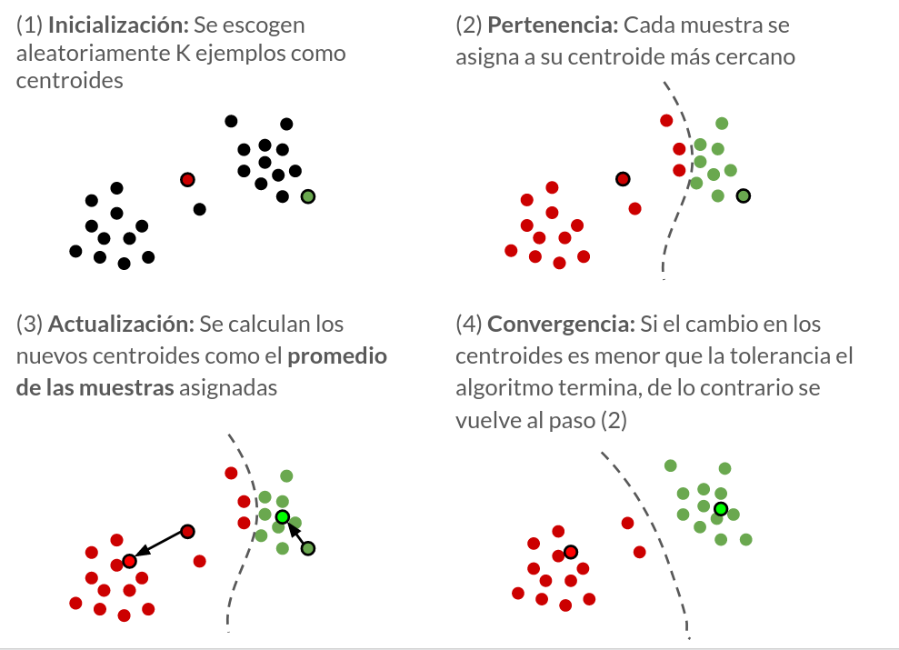

Clustering con algoritmo K-means
Contenido
37. Clustering con algoritmo K-means¶
El objetivo general de los métodos de clustering es agrupar los datos en conjuntos (clusters) tal que:
Los elementos dentro de un mismo cluster sean similares
Los elementos dentro de un mismo cluster sean distintos a los elementos pertenecientes a otro cluster
Importante
Los métodos de clustering permiten revelar estructuras escondidas en los datos y son muy importantes para realizar análisis exploratorio de datos
En general, los algoritmos de clustering requieren definir un criterio para medir similitud entre los ejemplos. Lo más típico para datos numéricos es usar métricas de distancia como la distancia euclidiana o la distancia de manhattan/taxista
Una vez definida la noción de distancia a utilizar se debe definir un criterio de agrupación. Dependiendo de la combinación entre estas definiciones surgen distintas familias de algoritmos de clustering
Algoritmos basados en representantes (centroides)
Algoritmos basados en conectividad y jerarquías
Algoritmos basados en modelos de densidad
En esta lección nos enfocaremos en un algoritmo clásico de clustering basado en representantes: K-medias o K-means.
37.1. Formalismo matemático¶
El algoritmo de K-means requiere que el usuario especifique a priori el número de clusters a detectar, es decir que \(K\), el número de clusters es un hiperparámetro del algoritmo. El algoritmo K-means es bastante simple y se resume en el siguiente diagrama esquemático
{kind=link}
Detalles:
Los centroides \(\{c_j\}_{j=1,\ldots,K}\) son los centros de los clusters.
En el paso 2, el cluster asociado a la muestra \(i\) se calcula usando la distancia euclidiana
En el paso 3 los el centroide \(j\) se actualiza como
donde la función indicadora se define como
es decir que el centroide es el promedio de las muestras asociadas a si mismo
37.2. K-means con scikit-learn¶
K-means está incluido en el módulo sklearn.cluster. El constructor y sus argumentos más importantes son
KMeans(n_clusters=8, # El número de grupos/clusters
init='k-means++', #El algoritmo de inicialización puede ser random o k-means++
n_init=10, # El número de inicializaciones que se prueban
max_iter=300, # El número máximo de iteraciones
tol=0.0001, # Si la diferencia entre los centroides en distintas iteraciones es menor que este valor, el algoritmo se detiene
...
)
Los métodos más importantes de la clase KMeans son
fit(X): Entrena y obtiene los centroidespredict(X): Retorna el índice del cluster más cercano para cada datofit_predict(X):fitypredicten un solo paso
Los atributos más importantes son
cluster_centers_: Los centroides de los clustersinertia_: La suma de errores cuadrados
Ejemplo: A modo de ejemplo se realiza un clustering con KMeans sobre el dataset Iris.
Para escoger el mejor número de clusters se utiliza el coeficiente de silueta
from sklearn.datasets import load_iris
iris_set = load_iris()
X, y, y_names = iris_set['data'], iris_set['target'], iris_set['target_names']
%matplotlib inline
import numpy as np
import matplotlib.pyplot as plt
from sklearn.metrics import silhouette_score, silhouette_samples
from sklearn.cluster import KMeans
fig, ax = plt.subplots(4, 1, figsize=(5, 6), tight_layout=True)
for k, n_clusters in enumerate(range(2, 6)):
# Clustering con kmeans
kmeans = KMeans(n_clusters=n_clusters)
membership = kmeans.fit_predict(X)
# Score de silueta promedio y por ejemplo
score_promedio = silhouette_score(X, membership)
score_ejemplos = silhouette_samples(X, membership)
y_lower = 10
for cluster in np.unique(membership):
scores_cluster_sorted = np.sort(score_ejemplos[membership==cluster])
y_upper = y_lower + len(scores_cluster_sorted)
ax[k].fill_betweenx(np.arange(y_lower, y_upper), 0, scores_cluster_sorted, alpha=0.7)
ax[k].axvline(score_promedio, ls='--', c='k')
ax[k].set_title(f'K: {n_clusters}')
ax[k].set_xlim([0, 1])
y_lower = y_upper + 10
ax[-1].set_xlabel('Coeficiente de silueta')
Las figuras muestran los coeficientes de silueta de los ejemplos asociados a cada uno de los clusters. La linea punteada negra corresponde al coeficiente de silueta promedio.
Tanto el caso de \(K=4\) como \(K=5\) presentan algunos clusters cuyos coeficientes de silueta son menores que el promedio. Por otro lado el caso \(K=2\) presenta alta disparidad den el tamaño de los clusters. En el caso \(K=3\) los clusters son de un tamaño más uniforme y todos los clusters tienen ejemplos que superan el coeficiente promedio.
Otra forma de guiar la selección del número de clusters es visualizar el decaimiento de la función de costo (suma de errores cuadráticos) en función del número de clusters
sse = []
n_clusters_test = range(2, 10)
for n_clusters in n_clusters_test:
kmeans = KMeans(n_clusters=n_clusters)
kmeans.fit(X)
sse.append(kmeans.inertia_)
fig, ax = plt.subplots(figsize=(5, 3), tight_layout=True)
ax.plot(n_clusters_test, sse)
ax.set_ylabel('Suma de errores\ncuadráticos')
ax.set_xlabel('K');
En este caso el mayor decaimiento en error cuadrático ocurre cuando pasamos de \(K=2\) a \(K=3\), lo cual indica que \(K=3\) es una buena elección
Nota
En este caso particular el mejor número de clusters coincide con la cantidad de clases del dataset
A continuación se muestran las clases originales versus las agrupaciones encontradas por K-means sobre la proyección a dos dimensiones obtenida con PCA
from sklearn.decomposition import PCA
pca = PCA(n_components=2)
hatX = pca.fit_transform(X)
kmeans = KMeans(n_clusters=3)
membership = kmeans.fit_predict(X)
fig, ax = plt.subplots(1, 2, figsize=(8, 4), tight_layout=True)
for y_, name in enumerate(y_names):
ax[0].scatter(hatX[y==y_, 0], hatX[y==y_, 1], s=10, label=name)
ax[0].legend()
for c in np.unique(membership):
ax[1].scatter(hatX[membership==c, 0], hatX[membership==c, 1], s=10, label=f'cluster {c}')
ax[1].legend();
37.3. Detalles prácticos sobre K-means¶
La correctitud de los clusters depende fuertemente de \(K\). Se recomienda probar con distinto \(K\) y evaluar los resultados usando el método del codo o el coeficiente de silueta.
El algoritmo de K-means es sensible a los centroides iniciales. Por lo tanto es recomendable probar varias veces con distintas inicializaciones. Por defecto KMeans prueba 10 inicializaciones distintas. Esto se puede controlar con el argumento n_init
K-means es un algoritmo rápido y que escala bien a datos masivos. Scikit-learn ofrece MinibatchKMeans para esos casos
Variantes de K-means
Si los datos tiene outliers fuertes se puede reemplazar el promedio en el paso 3 de KMeans por la mediana, obteníendose el algoritmo de las k-medianas
Si es un requisito que los centroides sean siempre ejemplos del dataset se puede usar el algoritmo de los k-medoides
Debilidades de KMeans
K-means asume que los clusters son
de “forma esférica”
de igual densidad.
Ver también
Si lo anterior no se cumple puede ser mejor utilizar algoritmos más generales (y más costosos) como Modelos de mezcla de gaussianas o DBSCAN